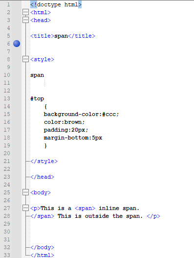
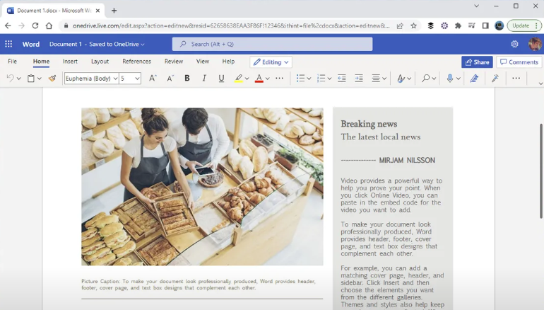
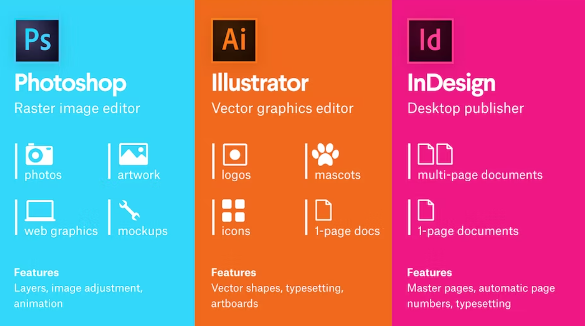
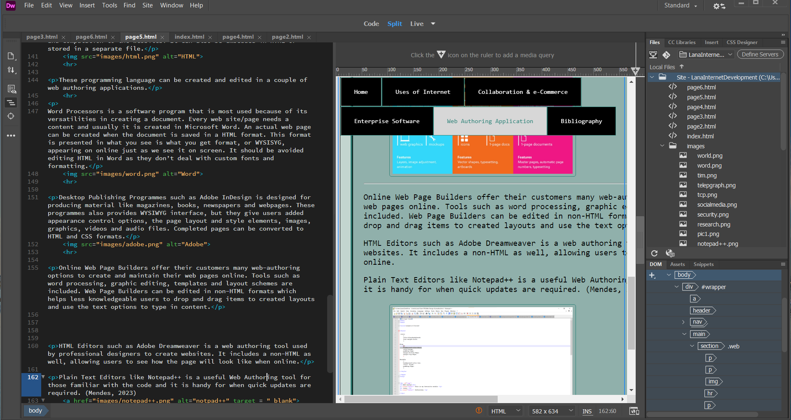
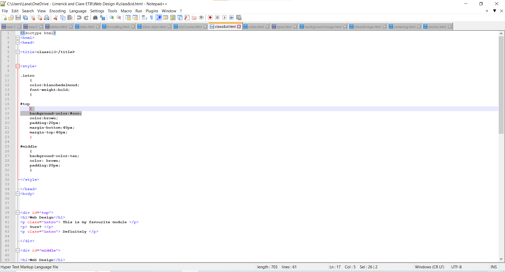

Web Authoring Applications
Web authoring applications allow users to visually create Web content. They include a wide range of programmes that can be downloaded.
Basic programming language of the World Wide Web is called Hypertext Mark-up Language or HTML and it’s used to specify the basic layout and functionality of the website. It is used to code the elements such as forms, images and section of texts, and some style specifications. CSS or Cascading Style Sheets is another language used to further style the web page. CSS can be embedded in HTML or stored in a separate file. Another language is called Java Script and is used to add interactivity and computation to the websites. It can also be embedded in HTML or stored in a separate file.
These programming language can be created and edited in a couple of web authoring applications.
Word Processors is a software program that is most used because of its versatilities in creating a document. Every web site/page needs a content and usually it is created in Microsoft Word. An actual web page can be created when the document is saved in a HTML format. This format is presented in what you see is what you get format, or WYSISYG, appearing on online just as we see it on screen. It should be avoided editing HTML in Word as they don’t deal with custom fonts and formatting.
Desktop Publishing Programmes such as Adobe InDesign is designed for producing material like magazines, books, newspapers and webpages. These programmes also provides WYSIWYG interface, but they give users added appearance control options, the page layout and style elements, images, graphics, videos and audio files. Completed pages can be converted to HTML and CSS formats.
Online Web Page Builders offer their customers many web-authoring options to create and maintain their web pages online. Tools such as word processing, graphic editing, templates and layout schemes are included. Web Page Builders can be edited in non-HTML formats which helps less knowledgeable users to drop and drag items to created layouts and use the text options to type in content.
- Wix
- SquareSpace
- Shopify
- FebFlow
- Figma
- Nova
- Google Web Designer
- Canva
HTML Editors such as Adobe Dreamweaver is a web authoring tool used by professional designers to create websites. It includes a non-HTML as well, allowing users to see how the page will look like when online.
Plain Text Editors like Notepad++ is a useful Web Authoring tool for those familiar with the code and it is handy for when quick updates are required. (Mendes, 2023) 